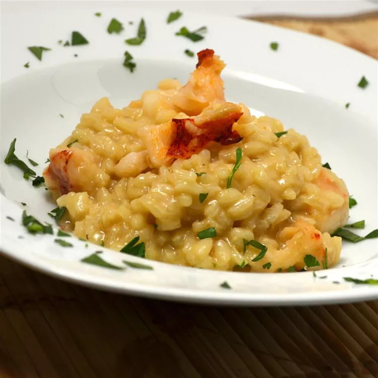

Home
Lobster Risotto

Valentine's Special <3
This lobster risotto is deliciously rich and creamy. It's made with cooked lobster, Arborio rice, caramelized onions, white wine, and Parmesan cheese for a seafood dish that is sure to impress!
Ingredients
- ¼ cup olive oil, divided
- 2 onions, chopped
- 6 cups chicken broth
- 1 shallot, chopped
- 1 clove garlic, chopped
- 1 ½ cups Arborio rice
- ½ cup white wine
- 1 tablespoon honey
- 3 tablespoons butter
- 1 cup light cream
- 1 tablespoon paprika
- 1 teaspoon cayenne pepper
- ¼ cup sherry
- 2 cups cooked lobster meat
- ½ cup shredded Parmesan cheese
- 1 pinch salt and ground black pepper to taste
Steps to make this Valentin's Special Dish :
- Heat 2 tablespoons oil in a large skillet over medium heat. Add onions; cook and stir until caramelized and very tender, about 20 minutes.
- Bring chicken broth to a boil in a pot; reduce heat to low and keep at a simmer.
- Heat remaining 2 tablespoons oil in a large, flat-bottom pan over medium-high heat. Cook and stir shallot and garlic in the hot oil until fragrant, about 2 minutes. Add Arborio rice to shallot mixture; cook and stir until rice begins to brown, about 3 minutes. Add wine and cook for 1 minute
- Stir 1 cup chicken broth into rice mixture; cook, stirring constantly, until broth is absorbed. Repeat adding broth, 1 cup at a time, until all the broth is used, stirring constantly until broth is absorbed each time, about 30 minutes.
- Stir honey into onions; cook and stir, 5 minutes more.
- Stir butter into rice mixture until melted. Add cream and stir until rice mixture thickens, about 3 minutes. Add paprika and cayenne pepper; stir well. Add sherry and mix well. Stir lobster meat into rice mixture and cook until heated through, about 3 minutes. Mix Parmesan cheese into rice mixture until melted. Add onion mixture and mix well; season with salt and pepper.